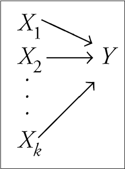

Package Version Citation
1 afex 1.1.1 @afex
2 base 4.2.2 @base
3 correlation 0.8.4 @
4 easystats 0.6.0.8 @easystats
5 emmeans 1.8.0 @emmeans
6 equatiomatic 0.3.1 @equatiomatic
7 flair 0.0.2 @flair
8 GGally 2.1.2 @GGally
9 gganimate 1.0.8 @gganimate
10 ggeffects 1.3.2 @ggeffects
11 ggpmisc 0.5.0 @ggpmisc
12 ggstatsplot 0.9.4 @ggstatsplot
13 gt 0.8.0 @gt
14 huxtable 5.5.0 @huxtable
15 insight 0.19.6 @insight
16 kableExtra 1.3.4 @kableExtra
17 knitr 1.41 @knitr2014; @knitr2015; @knitr2022
18 olsrr 0.5.3 @olsrr
19 pacman 0.5.1 @pacman
20 papaja 0.1.1.9001 @papaja
21 parameters 0.21.1.2 @parameters
22 patchwork 1.1.2 @patchwork
23 performance 0.10.4.1 @performance
24 ppcor 1.1 @ppcor
25 pwr 1.3.0 @pwr
26 report 0.5.7.9 @report
27 rmarkdown 2.14 @rmarkdown2018; @rmarkdown2020; @rmarkdown2022
28 see 0.8.0.2 @see
29 skimr 2.1.4 @skimr
30 supernova 2.5.6 @supernova
31 tidyverse 1.3.2 @tidyverse
32 ungeviz 0.1.0 @ungeviz
33 WebPower 0.9.4 @WebPower
34 xaringan 0.26 @xaringan
35 xaringanExtra 0.7.0 @xaringanExtra
36 xaringanthemer 0.4.1 @xaringanthemerMultiple Regression
Princeton University
Jason Geller, PH.D.(he/him)
2023-11-26
Packages
Today
Introduction to multiple regression
- Interpretation of coefs
Assumptions of multiple regression
Effect size and power
Plotting
Write-up
Simple Linear Model

Multiple predictors in linear regression
Multiple regression
\[\begin{align} \hat{Y} &= b_0 + \beta_1 X \end{align}\]
\[\large \hat{Y} = b_0 + b_1X_1 + b_2X_2 + \dots+b_kX_k\]
- Simple as adding predictors to our linear equation
Multiple regression equation
\[\large \hat{Y} = b_0 + b_1X_1 + b_2X_2 + \dots+b_kX_k\]
- \(\hat{Y}\) = predicted value on the outcome variable Y
- \(b_0\) = predicted value on Y when all Xs = 0
- \(X_k\) = predictor variables
- \(b_k\) = unstandardized regression coefficients
- \(k\) = the number of predictor variables
Straight Line to Hyperplane
More than two predictors (plane)
- Multi-dimensional space
Regression coefficients are “partial” regression coefficients
Slope for variable X1 (\(b_1\)) predicts the change in Y per unit X1 holding X2 constant
Slope for variable X2 (\(b_2\)) predicts the change in Y per unit X2 holding X1 constant
Multiple Regression: Example
\[ \begin{align*} \operatorname{CESD\_total} &= b_o + b_{1}(\operatorname{PIL\_total}) \\ &+ b_{2}(\operatorname{AUDIT\_TOTAL\_NEW}) \\ &+ b_{3}(\operatorname{DAST\_TOTAL\_NEW}) \\ &+ e \end{align*} \]
master <- read.csv("https://raw.githubusercontent.com/jgeller112/psy503-psych_stats/master/static/slides/10-linear_modeling/data/regress.csv")
head(master) X PIL_total CESD_total AUDIT_TOTAL_NEW DAST_TOTAL_NEW
1 1 121 28 1 0
2 2 76 37 5 0
3 3 98 20 3 0
4 4 122 15 3 1
5 5 99 7 2 0
6 6 134 7 3 0Mental Health and Drug Use:
- CESD = depression measure
- PIL total = measure of meaning in life
- AUDIT total = measure of alcohol use
- DAST total = measure of drug usage
Scatterplot
Scatterplot
Scatterplot
Individual Predictors
We test the individual predictors with a t-test:
\(t = \frac{b}{SE}\)
Therefore, the model for each individual predictor is our coefficient b
Single sample t-test to determine if the b value is different from zero
Fitting the model
model_fit <- lm(CESD_total ~ PIL_total + AUDIT_TOTAL_NEW + DAST_TOTAL_NEW,
data = master)
summary(model_fit)
Call:
lm(formula = CESD_total ~ PIL_total + AUDIT_TOTAL_NEW + DAST_TOTAL_NEW,
data = master)
Residuals:
Min 1Q Median 3Q Max
-19.619 -5.172 -1.256 3.420 28.847
Coefficients:
Estimate Std. Error t value Pr(>|t|)
(Intercept) 55.16374 3.88905 14.184 <2e-16 ***
PIL_total -0.38158 0.03384 -11.276 <2e-16 ***
AUDIT_TOTAL_NEW -0.09211 0.09391 -0.981 0.328
DAST_TOTAL_NEW 1.03415 0.39871 2.594 0.010 *
---
Signif. codes: 0 '***' 0.001 '**' 0.01 '*' 0.05 '.' 0.1 ' ' 1
Residual standard error: 7.585 on 262 degrees of freedom
(1 observation deleted due to missingness)
Multiple R-squared: 0.3587, Adjusted R-squared: 0.3513
F-statistic: 48.84 on 3 and 262 DF, p-value: < 2.2e-16| term | estimate | std.error | statistic | p.value | conf.low | conf.high |
|---|---|---|---|---|---|---|
| (Intercept) | 55.1637359 | 3.8890461 | 14.1843873 | 0.0000000 | 47.5059719 | 62.8214999 |
| PIL_total | -0.3815778 | 0.0338406 | -11.2757330 | 0.0000000 | -0.4482119 | -0.3149436 |
| AUDIT_TOTAL_NEW | -0.0921089 | 0.0939109 | -0.9808116 | 0.3275905 | -0.2770251 | 0.0928073 |
| DAST_TOTAL_NEW | 1.0341539 | 0.3987126 | 2.5937324 | 0.0100281 | 0.2490649 | 1.8192429 |
\(b_0\): The value of Y when all the Xs=0
Fitting the model
| term | estimate | std.error | statistic | p.value | conf.low | conf.high |
|---|---|---|---|---|---|---|
| (Intercept) | 55.1637359 | 3.8890461 | 14.1843873 | 0.0000000 | 47.5059719 | 62.8214999 |
| PIL_total | -0.3815778 | 0.0338406 | -11.2757330 | 0.0000000 | -0.4482119 | -0.3149436 |
| AUDIT_TOTAL_NEW | -0.0921089 | 0.0939109 | -0.9808116 | 0.3275905 | -0.2770251 | 0.0928073 |
| DAST_TOTAL_NEW | 1.0341539 | 0.3987126 | 2.5937324 | 0.0100281 | 0.2490649 | 1.8192429 |
\(b_1\): If Alch and drug use are held constant, for every 1 unit increase in X (meaning) leads to a -0.38 decrease in depression scores.
Fitting the model
| term | estimate | std.error | statistic | p.value | conf.low | conf.high |
|---|---|---|---|---|---|---|
| (Intercept) | 55.1637359 | 3.8890461 | 14.1843873 | 0.0000000 | 47.5059719 | 62.8214999 |
| PIL_total | -0.3815778 | 0.0338406 | -11.2757330 | 0.0000000 | -0.4482119 | -0.3149436 |
| AUDIT_TOTAL_NEW | -0.0921089 | 0.0939109 | -0.9808116 | 0.3275905 | -0.2770251 | 0.0928073 |
| DAST_TOTAL_NEW | 1.0341539 | 0.3987126 | 2.5937324 | 0.0100281 | 0.2490649 | 1.8192429 |
\(b_2\): Holding meaning and drug use constant, for every unit increase in alch use there is a -0.09 decrease in depression scores.
Fitting the model
| term | estimate | std.error | statistic | p.value | conf.low | conf.high |
|---|---|---|---|---|---|---|
| (Intercept) | 55.1637359 | 3.8890461 | 14.1843873 | 0.0000000 | 47.5059719 | 62.8214999 |
| PIL_total | -0.3815778 | 0.0338406 | -11.2757330 | 0.0000000 | -0.4482119 | -0.3149436 |
| AUDIT_TOTAL_NEW | -0.0921089 | 0.0939109 | -0.9808116 | 0.3275905 | -0.2770251 | 0.0928073 |
| DAST_TOTAL_NEW | 1.0341539 | 0.3987126 | 2.5937324 | 0.0100281 | 0.2490649 | 1.8192429 |
\(b_3\): Holding meaning and alch usage constant, for every unit increase in drug usage there is a 1.03 increase in depression.
Mo predictors mo problems
Assumptions
Linearity
Independence
Normality of residuals
Equal error (“homoskedasticity”)
Issues:
Missingness
Factors are correlated with one another (multicollinearity)
Unusual values/outliers
Problems
- Missingness
- list-wise deletion (removes entire row where missingness occurs)
Problems
Multicolinearity
You want X and Y to be correlated
You do not want the Xs to be highly correlated
Multicolinearity
Problems
Extreme cases (complete collinearity) = Nonidentifiable model
“Unstable” regression coefficients (“bouncing betas”)
- Imprecise estimation
Large standard errors
- Increased Type II errors
- Not detecting a difference when there is one
- Increased Type II errors
Multicolinearity
Tolerance
- Measures influence of one predictor on another
- If predictors are highly correlated, tolerance gets smaller
\[Tolerance=1- R^2_j\]
where \(R^2_j\) is the proportion of variation in X that is explained by the linear combination of the other predictors in the model
Multicolinearity
VIF (variance inflation factor)
- How much does our estimates (SEs) change due to the correlation
\[VIF=\frac{1}{1- R^2_j}\]
Rule of thumb:
- VIF > 10 indicates issues
Multicolinearity
- Check multicolinearity in your data
Multicolinearity
Strategies
Anticipate collinearity issues at the design stage
Depends: Drop variable if there’s no theoretical pay-off anyway
Depends: Fit separate models and compare fit
Depends: Increase sample size
Depends: Orthogonalize predictors experimentally
Depends: Use alternative approaches, such as ridge regression or LASSO
Do not do anything about it (if prediction is your goal)
Identifying unusual cases
Influential points
- An observation or case is influential if removing it substantially changes the coefficients of the regression model
Influence = Leverage x Distance (outliers)
Influential points
Influential points have a large impact on the coefficients and standard errors used for inference
- Can be on x or y variables
These points can sometimes be identified in a scatterplot if there is only one predictor variable
- This is often not the case when there are multiple predictors
We will use measures to quantify an individual observation’s influence on the regression model
- Leverage, Standardized residuals , and Cook’s distance
Leverage
- Deals with Xs
Measure of geometric distance of the observation’s predictor point (\(X_{i1}\), \(X_{i2}\)) from center point of the predictor space
\[ h_i = \dfrac{1}{n} + \dfrac{\left(x_i -\overline{x}\right)^2}{\sum_{j=1}^{n}{\left(x_j -\overline{x}\right)^2}} \qquad \text{and}\qquad \overline{h} = \dfrac{k}{n} \qquad \text{and}\qquad \dfrac{1}{n} \leq h_i \leq 1.0 \]
Note
In multiple regression \(h_i\) measures distance from the centroid (point of means) of Xs
Leverage
Leverage
- We say a point is high leverage if:
\[ h_i > \frac{2K+2}{N} \]
K is the number of predictors
N is the sample size
k <- 3 ##number of IVs/predictors
# label 1 if out 0 if not
model_out<- model_fit %>%
augment() %>%
mutate(lev_out = ifelse(.hat>(2*+2)/nrow(.),1, 0))
model_out# A tibble: 266 × 12
.rownames CESD_total PIL_total AUDIT_TOTAL_NEW DAST_TOTAL_NEW .fitted .resid
<chr> <dbl> <dbl> <dbl> <int> <dbl> <dbl>
1 1 28 121 1 0 8.90 19.1
2 2 37 76 5 0 25.7 11.3
3 3 20 98 3 0 17.5 2.51
4 4 15 122 3 1 9.37 5.63
5 5 7 99 2 0 17.2 -10.2
6 6 7 134 3 0 3.76 3.24
7 7 27 102 2 1 17.1 9.91
8 8 10 124 1 0 7.76 2.24
9 9 9 126 1 0 6.99 2.01
10 10 8 112 7 1 12.8 -4.82
# ℹ 256 more rows
# ℹ 5 more variables: .hat <dbl>, .sigma <dbl>, .cooksd <dbl>,
# .std.resid <dbl>, lev_out <dbl>Standardized Residuals
- Distance
- how far away y point is from line
\[ std.res_i = \frac{y_i - \hat{y}_i}{\hat{\sigma}_\epsilon\sqrt{1-h_i}} \]
Where \(\hat{\sigma}_\epsilon\) is regression standard error
- Use cut-off > 3
Standardized Residuals
Leverage and Distance
Montoya
Leverage and distance
Montoya
Leverage and distance
Montoya
Cook’s distance
Influence (Cook’s Distance)
A measure of how much of an effect that single case has on the whole model
How close it lies to general line (residuals)
It’s leverage \[ D_i = \frac{(std.res_i)^2}{k + 1}\bigg(\frac{h_i}{1-h_i}\bigg) \]
Threshold:
\[ \frac{4}{N-K-1} \]
Cook’s distance
Combine Metrics
What do I do with all these numbers?
Create a total score for the number of indicators a data point has
You can decide what rule to use, but a suggestion is 2 or more indicators is an outliers
# label 1 if out 0 if not
model_out<- model_fit %>%
augment() %>%
mutate(lev_out = ifelse(.hat>(2*k+2)/nrow(.),1, 0), cook_out = ifelse(.cooksd > (4 / (nrow(.) - 3 - 1)), 1, 0), std_out=ifelse(.std.resid >= 3, 1, 0)) %>%
rowwise() %>%
mutate(sum_out=lev_out+cook_out+std_out) %>%
filter(sum_out < 2)
nrow(nomiss)[1] 266[1] 255Easystats: Check_outliers
Use consensus method
- If half of methods say point is outlier, get rid of it
# will estimate all outliers methods
outliers_list <- check_outliers(model_fit, method = "all")
# provides a col called outliers with prob of outliers by method (50% more than half said ob was outlier)
out_data <-insight::get_data(model_fit)[outliers_list, ] # Show outliers data
# get rid of values in outliers list in the main dataset
clean_data <- anti_join(nomiss,out_data, by=c("CESD_total", "PIL_total", "AUDIT_TOTAL_NEW", "DAST_TOTAL_NEW"))Refit model
Assumptions
Linearity
Independence
Normality of residuals
Equal error (“homoskedasticity”)
- Additivity (more than one variable)
Assumptions
Additivity
Implies that for an existing model, the effect of a predictor on a response variable (whether it be linear or non-linear) is not affected by changes in other existing predictors
- Add interaction if not the case
Assumptions
Violation Assumptions
Normality (more on this next week)
Homoskedasticity
Heteroskedasticity
Warning: Heteroscedasticity (non-constant error variance) detected (p = 0.001).We can use robust SEs
They work by changing the covariance matrix (the diagonal is the variance)
\[ \text{Var}(\epsilon) = \sigma^2 I_n = \sigma^2 \begin{bmatrix} 1 & 0 & \cdots & 0 \\ 0 & 1 & \cdots & 0 \\ \vdots & \vdots & \ddots & \vdots \\ 0 & 0 & \cdots & 1 \end{bmatrix} \]
Heteroskedasticity
\[ D_{\text{HC3}} = \begin{bmatrix} \frac{\epsilon_1^2}{(1-h_{11})^2} & 0 & \cdots & 0 \\ 0 & \frac{\epsilon_2^2}{(1-h_{22})^2} & \cdots & 0 \\ \vdots & \vdots & \ddots & \vdots \\ 0 & 0 & \cdots & \frac{\epsilon_n^2}{(1-h_{nn})^2} \end{bmatrix} \]
library(easystats) # model_paramters function
#fit model first then read into function
mp <- model_parameters(model_fit, vcov = "HC3")
mpParameter | Coefficient | SE | 95% CI | t(256) | p
-----------------------------------------------------------------------
(Intercept) | 57.65 | 4.16 | [49.45, 65.84] | 13.85 | < .001
PIL total | -0.40 | 0.04 | [-0.47, -0.33] | -11.32 | < .001
AUDIT TOTAL NEW | -0.10 | 0.09 | [-0.28, 0.07] | -1.18 | 0.240
DAST TOTAL NEW | 0.89 | 0.48 | [-0.06, 1.84] | 1.85 | 0.066 Refit Model
- Fit model on clean dataset with outliers removed
| Parameter | Coefficient | SE | CI | CI_low | CI_high | t | df_error | p |
|---|---|---|---|---|---|---|---|---|
| (Intercept) | 57.6453027 | 4.1612337 | 0.95 | 49.4506937 | 65.8399117 | 13.852935 | 256 | 0.0000000 |
| PIL_total | -0.4017946 | 0.0354963 | 0.95 | -0.4716965 | -0.3318927 | -11.319347 | 256 | 0.0000000 |
| AUDIT_TOTAL_NEW | -0.1030182 | 0.0874974 | 0.95 | -0.2753246 | 0.0692882 | -1.177385 | 256 | 0.2401352 |
| DAST_TOTAL_NEW | 0.8902347 | 0.4822412 | 0.95 | -0.0594303 | 1.8398998 | 1.846036 | 256 | 0.0660414 |
\(b_1\):
Interpretation
| Parameter | Coefficient | SE | CI | CI_low | CI_high | t | df_error | p |
|---|---|---|---|---|---|---|---|---|
| (Intercept) | 57.6453027 | 4.1612337 | 0.95 | 49.4506937 | 65.8399117 | 13.852935 | 256 | 0.0000000 |
| PIL_total | -0.4017946 | 0.0354963 | 0.95 | -0.4716965 | -0.3318927 | -11.319347 | 256 | 0.0000000 |
| AUDIT_TOTAL_NEW | -0.1030182 | 0.0874974 | 0.95 | -0.2753246 | 0.0692882 | -1.177385 | 256 | 0.2401352 |
| DAST_TOTAL_NEW | 0.8902347 | 0.4822412 | 0.95 | -0.0594303 | 1.8398998 | 1.846036 | 256 | 0.0660414 |
\(b_2\):
Interpretation
| Parameter | Coefficient | SE | CI | CI_low | CI_high | t | df_error | p |
|---|---|---|---|---|---|---|---|---|
| (Intercept) | 57.6453027 | 4.1612337 | 0.95 | 49.4506937 | 65.8399117 | 13.852935 | 256 | 0.0000000 |
| PIL_total | -0.4017946 | 0.0354963 | 0.95 | -0.4716965 | -0.3318927 | -11.319347 | 256 | 0.0000000 |
| AUDIT_TOTAL_NEW | -0.1030182 | 0.0874974 | 0.95 | -0.2753246 | 0.0692882 | -1.177385 | 256 | 0.2401352 |
| DAST_TOTAL_NEW | 0.8902347 | 0.4822412 | 0.95 | -0.0594303 | 1.8398998 | 1.846036 | 256 | 0.0660414 |
- \(b_3\):
Predictors
$estimate
$estimate$Intercept
[1] "$b = 57.65$, 95\\% CI $[49.82, 65.47]$"
$estimate$PIL_total
[1] "$b = -0.40$, 95\\% CI $[-0.47, -0.33]$"
$estimate$AUDIT_TOTAL_NEW
[1] "$b = -0.10$, 95\\% CI $[-0.29, 0.09]$"
$estimate$DAST_TOTAL_NEW
[1] "$b = 0.89$, 95\\% CI $[-0.10, 1.88]$"
$estimate$modelfit
$estimate$modelfit$r2
[1] "$R^2 = .37$, 90\\% CI $[0.28, 0.44]$"
$estimate$modelfit$r2_adj
[1] "$R^2_{adj} = .36$"
$estimate$modelfit$aic
[1] "$\\mathrm{AIC} = 1,787.29$"
$estimate$modelfit$bic
[1] "$\\mathrm{BIC} = 1,805.10$"
$statistic
$statistic$Intercept
[1] "$t(256) = 14.50$, $p < .001$"
$statistic$PIL_total
[1] "$t(256) = -11.63$, $p < .001$"
$statistic$AUDIT_TOTAL_NEW
[1] "$t(256) = -1.08$, $p = .283$"
$statistic$DAST_TOTAL_NEW
[1] "$t(256) = 1.77$, $p = .077$"
$statistic$modelfit
$statistic$modelfit$r2
[1] "$F(3, 256) = 49.58$, $p < .001$"
$full_result
$full_result$Intercept
[1] "$b = 57.65$, 95\\% CI $[49.82, 65.47]$, $t(256) = 14.50$, $p < .001$"
$full_result$PIL_total
[1] "$b = -0.40$, 95\\% CI $[-0.47, -0.33]$, $t(256) = -11.63$, $p < .001$"
$full_result$AUDIT_TOTAL_NEW
[1] "$b = -0.10$, 95\\% CI $[-0.29, 0.09]$, $t(256) = -1.08$, $p = .283$"
$full_result$DAST_TOTAL_NEW
[1] "$b = 0.89$, 95\\% CI $[-0.10, 1.88]$, $t(256) = 1.77$, $p = .077$"
$full_result$modelfit
$full_result$modelfit$r2
[1] "$R^2 = .37$, 90\\% CI $[0.28, 0.44]$, $F(3, 256) = 49.58$, $p < .001$"
$table
A data.frame with 6 labelled columns:
term estimate conf.int statistic df p.value
1 Intercept 57.65 [49.82, 65.47] 14.50 256 < .001
2 PIL total -0.40 [-0.47, -0.33] -11.63 256 < .001
3 AUDIT TOTAL NEW -0.10 [-0.29, 0.09] -1.08 256 .283
4 DAST TOTAL NEW 0.89 [-0.10, 1.88] 1.77 256 .077
term : Predictor
estimate : $b$
conf.int : 95\\% CI
statistic: $t$
df : $\\mathit{df}$
p.value : $p$
attr(,"class")
[1] "apa_results" "list" - Meaning: \(b = -0.40\), 95% CI \([-0.47, -0.33]\), \(t(256) = -11.63\), \(p < .001\)
- Alcohol: \(b = -0.10\), 95% CI \([-0.29, 0.09]\), \(t(256) = -1.08\), \(p = .283\)
- Drugs: \(b = 0.89\), 95% CI \([-0.10, 1.88]\), \(t(256) = 1.77\), \(p = .077\)
Overall Model Fit
- Is the overall model significant?
- \(R^2 = .37\), 90% CI \([0.28, 0.44]\), \(F(3, 256) = 49.58\), \(p < .001\)
Adjusted \(R^2\)
\[ \large R_{A}^2 = 1 - (1 -R^2)\frac{n-1}{n-p-1} \]
glance(model_fit) %>%
knitr::kable() %>%
kable_styling(font_size = 24) %>%
column_spec(2, color = "white",
background = "red")| r.squared | adj.r.squared | sigma | statistic | p.value | df | logLik | AIC | BIC | deviance | df.residual | nobs |
|---|---|---|---|---|---|---|---|---|---|---|---|
| 0.3675175 | 0.3601056 | 7.438596 | 49.58476 | 0 | 3 | -888.6458 | 1787.292 | 1805.095 | 14165.17 | 256 | 260 |
Effect size
- R is the multiple correlation
- \(R^2\) is the multiple correlation squared
- All overlap in Y used for overall model
- \(A+B+C/(A+B+C+D)\)

Effect Size
- sr is the semipartial correlation
- It represents (when squared) the proportion of (unique) variance accounted for by the predictor, relative to the total variance of Y
- Increase in proportion of explained Y variance when X is added
- How much does X add over and beyond other variables
- Increase in proportion of explained Y variance when X is added
- It represents (when squared) the proportion of (unique) variance accounted for by the predictor, relative to the total variance of Y

Effect Size
- \(pr\) is the partial correlation
- When squared, proportion of variance not explained by other predictors but just X
- Removes influence of other variables
- When squared, proportion of variance not explained by other predictors but just X
- Pr > sr


When to use?
\(sr^2\)
- Most often used when we want to show that some variable adds incremental variance in Y above and beyond another X variable
\(pr^2\)
- Remove influence of another variable
Partial correlations
PIL_total CESD_total AUDIT_TOTAL_NEW DAST_TOTAL_NEW
PIL_total 1.000000000 0.345595004 0.003207045 0.002944418
CESD_total 0.345595004 1.000000000 0.004507692 0.012149492
AUDIT_TOTAL_NEW 0.003207045 0.004507692 1.000000000 0.233954231
DAST_TOTAL_NEW 0.002944418 0.012149492 0.233954231 1.000000000Partial correlations
- Can use your model to get \(sr^2\)
Partial correlations
We would add these to our other reports:
- Meaning: \(b = -0.40\), 95% CI \([-0.47, -0.33]\), \(t(256) = -11.63\), \(p < .001\), \(pr^2 = .33\)`
- Alcohol: \(b = -0.10\), 95% CI \([-0.29, 0.09]\), \(t(256) = -1.08\), \(p = .283\), \(pr^2 = .02\)`
- Drugs: \(b = 0.89\), 95% CI \([-0.10, 1.88]\), \(t(256) = 1.77\), \(p = .077\), \(pr^2 = .03\)`
Note
\(pr^2\): 33% of variance in Depression is explained by meaning that is not explained by the other variables
\(sr^2\): 3% of variance in depression can be uniquely explained by meaning above and beyond the other vars.
Multiple Regression: Power
Plotting
Partial regression plots
- Must partial out other factors by setting them to some value (usually mean)
Write-up
We fitted a linear model(estimated using OLS) to predictCESD_total with PIL_total,AUDIT_TOTAL_NEW andDAST_TOTAL_NEW (formula:CESD_total ~ PIL_total +AUDIT_TOTAL_NEW +DAST_TOTAL_NEW). The model explains a statistically significant and substantial proportion of variance (R2 =0.36, F(3, 262) = 48.84, p <.001, adj. R2 = 0.35).
- Meaning: \(b = -0.40\), 95% CI \([-0.47, -0.33]\), \(t(256) = -11.63\), \(p < .001\), \(pr^2 = .35\)`
- Alcohol: \(b = -0.10\), 95% CI \([-0.29, 0.09]\), \(t(256) = -1.08\), \(p = .283\), \(pr^2 = .02\)`
- Drugs: \(b = 0.89\), 95% CI \([-0.10, 1.88]\), \(t(256) = 1.77\), \(p = .077\), \(pr^2 = .03\)`
Next Week
Centering
Standardizing
Transformations
PSY 503: Foundations of Statistics in Psychology